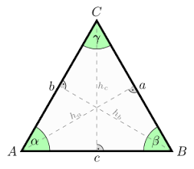
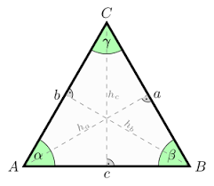

A triangle is a 3-sided polygon sometimes (but not very commonly) called the Trigon. Every triangle has three sides and three angles, some of which may be the same. The sides of a triangle are given special names in the case of a right triangle, with the side opposite the right angle being termed the hypotenuse and the other two sides being known as the legs. All triangles are convex and bicentric. That portion of the plane enclosed by the triangle is called the triangle interior, while the remainder is the exterior.
To find out whether your numbers make a triangle and which type, fill in below:
 
